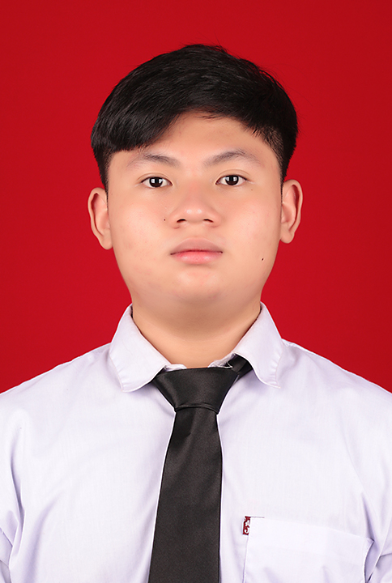

Staf Publikasi dan Dokumentasi
Event Dhamma Camp — Kamadhis Dharma Jaya, Universitas Atma Jaya Yogyakarta
Bertugas pada publikasi acara dan dokumentasi kegiatan.
HALO, SENANG BERTEMU DENGANMU
UI/UX Designer dan Front-End Developer yang berfokus menciptakan pengalaman digital yang bermakna.

01 — ABOUT
Saya merupakan mahasiswa Informatika yang tertarik pada pengembangan perangkat lunak, khususnya website. Saya menikmati proses mengubah kebutuhan nyata menjadi website yang sederhana dan mudah digunakan.
Saat ini saya terus belajar menulis kode yang dapat memudah orang lain memahami desain antarmuka
Event Dhamma Camp — Kamadhis Dharma Jaya, Universitas Atma Jaya Yogyakarta
Bertugas pada publikasi acara dan dokumentasi kegiatan.
Event HUT — Kamadhis Dharma Jaya, Universitas Atma Jaya Yogyakarta
Mendukung keamanan kegiatan serta menyiapkan konsumsi dan perlengkapan event.
BEBERAPA PROJECT YANG SAYA BUAT
Dari kebutuhan nyata menjadi pengalaman
yang mudah dipahami dan digunakan.
Saya terbuka untuk proyek, kolaborasi, atau obrolan santai tentang desain dan teknologi.